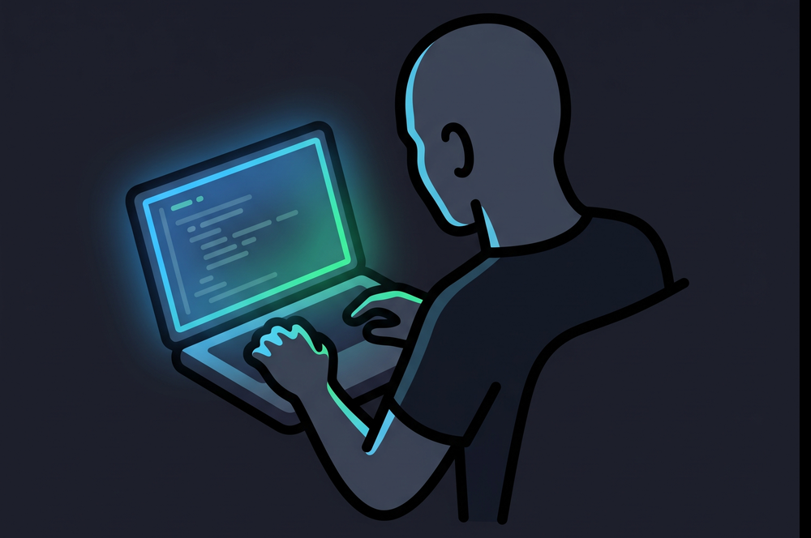
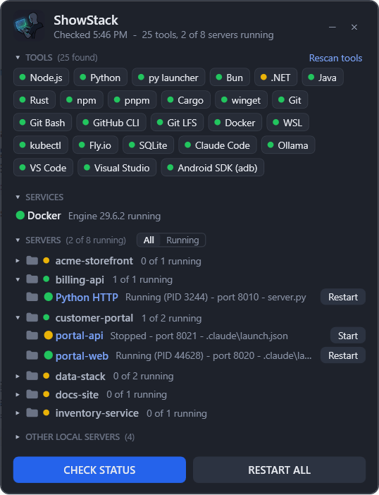
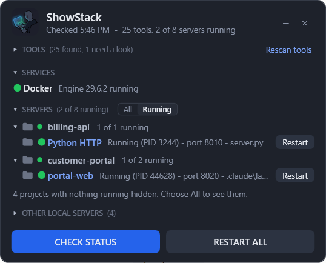
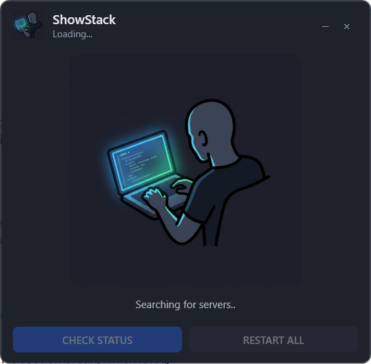

Your whole local dev stack in one small window.
Every developer tool on your computer, every localhost server your code can start, and one button to start it. ShowStack is a floating, always-on-top widget for Windows 10 and 11 and for Linux Mint.
No install beyond a folder, no admin rights, no internet unless you ask it to install a tool. MIT licensed. Install steps.

Three questions, answered at a glance
What do I have installed?
A box for each known developer tool it finds, with its version: languages, package managers, Git, Docker, cloud CLIs, databases, editors, AI coding tools, local LLMs (Ollama, LM Studio, llama.cpp) and typesetting (Typst, Tectonic). 99 tools on Windows, 105 on Linux.
What can I run, and is it running?
It reads your project code and lists every localhost server it can start, grouped by project, each with a green, yellow or red light and a Start or Restart button. Projects with missing packages show Install instead.
Where is that code?
A folder icon on every project and server opens it in File Explorer, or in your file manager on Linux. Click a server name to open it in the browser. One click on the copy icon puts the whole stack on your clipboard as Markdown.



Features
- Finds servers by reading your code.
package.jsonscripts (Vite, Next.js, Nuxt, Astro, Angular, CRA, webpack, Storybook, Wrangler, Expo, Node and tsx servers), Djangomanage.py, Python files that run uvicorn, Flask, aiohttp orhttp.server, docker compose services, ASP.NETlaunchSettings.json, and Claude Code's.claude/launch.json. - Knows the port. From
--portflags,vite.config,const PORT = ...or the framework default. Projects that only read aPORTvariable get a fixed port of their own. - Starts, restarts and stops safely. It only restarts a process it can tie to that server, and never touches a port held by something else.
- Spots missing packages. A project with no
node_modulesshows Install instead of a Start button that would fail. - Required tools. Mark the tools you cannot work without; if one goes missing it turns red, and one click installs it with winget, apt, Flatpak or the vendor's installer, in a window you can watch.
- Docker. Shows whether the engine is running, starts it when it is not, and lists compose services with their ports.
- Local AI models. Ollama, LM Studio and llama.cpp as tools, and their model servers as rows with a light and a Start or Restart button.
- Folding and filtering. Fold any section or project. Switch between All and Running. Hide servers you never use. ShowStack remembers all of it, and its position.
- Copy the whole stack. A complete Markdown report of tools, services and servers on your clipboard, ready to paste into an AI assistant, an issue or a document.
- Nothing phones home. No network, except the installs you confirm. It reads your code and your process list, and writes only its own settings and state.
Download and install
The version and sizes below are read from GitHub when this page opens. Both downloads hold the same repository; the Windows files and the Linux files sit side by side, so one folder serves a dual-boot machine.
Windows
Requirements. Windows 10 or 11. Windows PowerShell 5.1 and WPF, both built in. No admin rights.
- Extract the ZIP to a permanent folder, for example
C:\Tools\ShowStack. - In that folder, run:
Addpowershell -NoProfile -ExecutionPolicy Bypass -File Install.ps1-Startupto also open ShowStack when you sign in. - Double-click ShowStack on your desktop.
Install.ps1 unblocks the files, puts a shortcut on your desktop, and nothing else. Settings live in showstack.json next to the app.
Linux
Requirements. Linux Mint 20 or later, or any desktop with Python 3.8+ and GTK 3 (python3-gi and gir1.2-gtk-3.0, which Mint ships). No root rights.
- Extract the archive to a permanent folder, for example
~/Apps/ShowStack. The menu entry points at that folder. - In that folder, run:
Addbash linux/install.sh--startupto also open ShowStack when you sign in. - Open ShowStack from the menu, or double-click it on the desktop.
Settings live in ~/.config/showstack/showstack.json, state and server logs in ~/.local/state/showstack. Tested on Linux Mint 22 with Cinnamon.
Prefer git? git clone https://github.com/Orangeriger1998/ShowStack.git gives you both versions, and git pull updates them. Your settings file is never part of the repository, so an update never overwrites it.
Windows and Linux
Everything you see works the same on both: the tool boxes, Docker, the servers found in your code with their lights, Start, Restart and Install, folding, All or Running, the copy icon, hiding servers and opening folders. Under the hood they differ where the systems differ.
| Windows | Linux | |
|---|---|---|
| Runs on | Windows PowerShell 5.1 and WPF, built into Windows | Python 3 and GTK 3 (PyGObject), shipped with Linux Mint |
| Tool catalog | tool-catalog.json: winget ids, Program Files paths | linux/tool-catalog.json: apt packages, Flatpak ids, ~/.local/bin, ~/.cargo/bin and friends |
| Installing a tool | winget or the vendor installer, in a PowerShell window | sudo apt install, Flatpak or the vendor installer, in your terminal |
| Settings | showstack.json next to the app | ~/.config/showstack/showstack.json |
| Saved state and logs | %LOCALAPPDATA%\ShowStack | ~/.local/state/showstack |
| Docker | Starts Docker Desktop | Starts the Docker service (asks for your password), rootless Docker or Docker Desktop for Linux, whichever you have |
| Folder icon | File Explorer | Your file manager: Nemo, Caja, Thunar and others |
| Second launch | Ignored | Brings the open widget to the front |
Works with Claude Code
ShowStack reads the project list Claude Code keeps and the .claude/launch.json file in each project, so the dev servers an AI coding assistant registered appear with their ports, marked as registered. When Claude says "restart your server", the Restart button is one click away, and the Markdown export gives the assistant the whole picture of your machine in one paste. The Claude Code page in the wiki has the details.